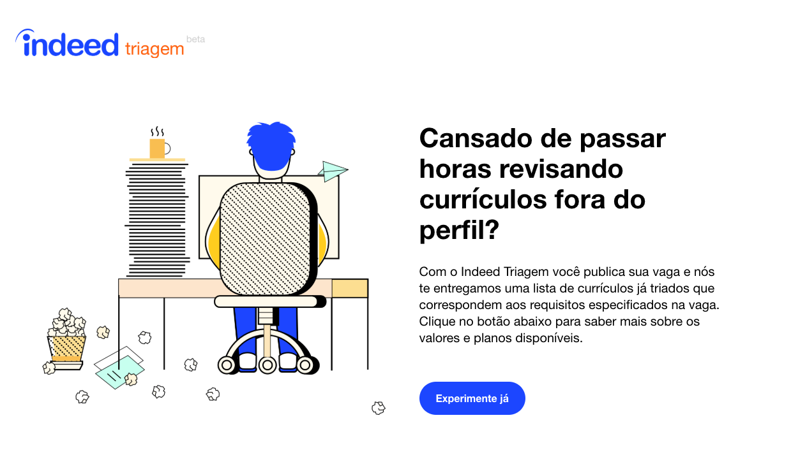

Experienced corporate strategy & operations leader with track record scaling tech companies internationally. Proven P&L owner, Strategic Partnership Builder, GTM Strategist, Project Manager, Revenue Forecaster, Strategic Thinker & Executor, LATAM Advocate. Passionate about data analytics. Portuguese, Spanish, Yiddish-Speaking Polyglot.
Oversees OpenTable international expansion roadmap and prioritization and third-party Delivery, Content, and Affiliate Partnerships. Also owns OpenTable competitive intelligence
Owned strategic growth initiatives to increase new Meetup organizer subscriptions. Day-to-day thought-partner to PMs, providing frameworks, research & data analytics, experiment design & evaluation, and KPI defining & measurement.
Sat at the intersection of tech, strategy, marketing, sales and business operations to shape and deliver Indeed's strategy in Brazil. Responsible for the Indeed Brazil P&L, growth strategy and for the delivery of product, marketing and sales initiatives to realize this strategy.
Built out and presented data-driven, cross-functional actionable recommendations to senior leadership for expanding our products and competitive position internationally.
Conducted research on Brazilian Marranos, taught English to college students, and worked as a strategy analyst at social entrepreneurial startup
Led strategic research and analysis projects for leading LATAM financial services institutions as part of the CEB Financial Services Operations Leadership Council, focusing on how to prepare Operations and Customer Servicing teams to support their strategic objectives.

Magna Cum Laude; GPA: 3.80/4.00
Apart from helping tech companies expand globally, I am passionate about the following in no-specific order:
If you're interested in touching base with me, I'm always open to discussing any of my research or potential freelance side-projects.
You can reach me at daneel.schaechter@gmail.com